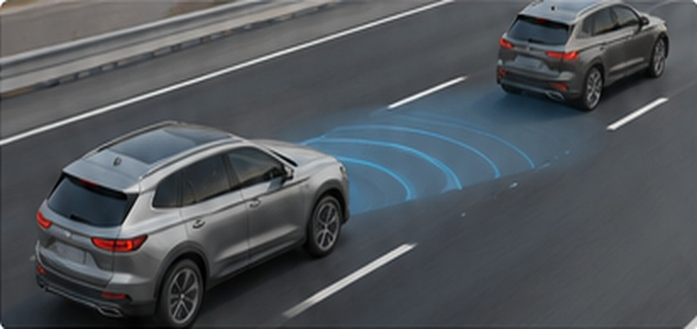
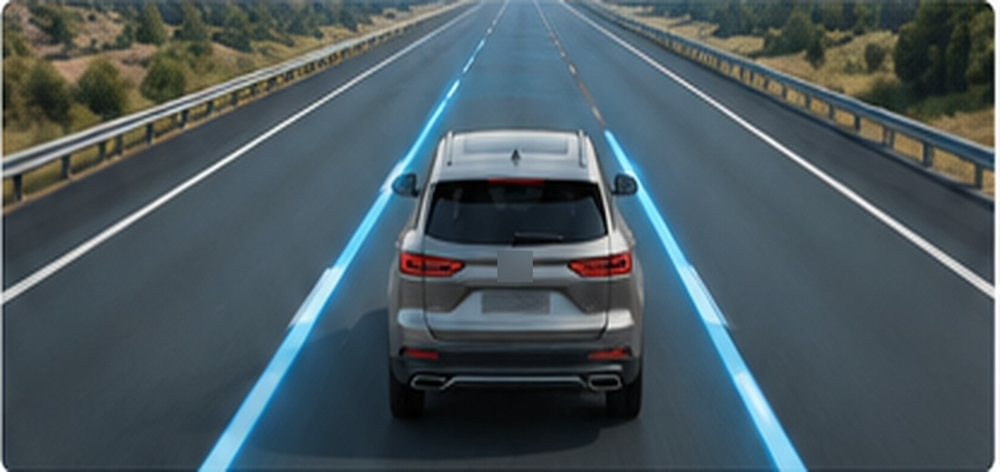
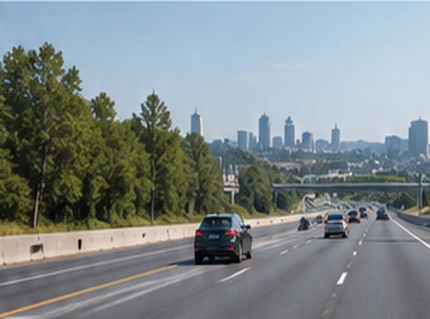

Adaptive Cruise Control
Holds a set speed. Slows down to maintain a following distance behind a detected vehicle ahead. Can slow to a stop behind that vehicle and resume when it moves.
This page is part of a Texas State University research study and is available only through the study link.
DriveAssist combines adaptive cruise control and lane centering on limited-access divided highways.

Holds a set speed. Slows down to maintain a following distance behind a detected vehicle ahead. Can slow to a stop behind that vehicle and resume when it moves.

Applies steering assistance to help center the vehicle in a detected lane, using visible lane markings.
DriveAssist is available only on limited-access divided highways, with on- and off-ramps and no intersections. It requires clearly visible lane markings on both sides of the lane. It is not available on city streets or roads with intersections.

DriveAssist may not perform correctly in these situations.
DriveAssist is a driving assistance feature that combines adaptive cruise control and lane centering on compatible highways.
DriveAssist combines adaptive cruise control and lane centering. Adaptive cruise control helps maintain a set speed and following distance. Lane centering provides steering assistance using visible lane markings.
On limited-access divided highways with clearly visible lane markings. It is not available on city streets or roads with intersections.
A camera behind the windshield reads the painted lane markings on both sides of the lane. When markings are faded or hidden, lane centering may not be available.
You are always the driver. DriveAssist does not make your vehicle self-driving. Keep your hands on the wheel and your eyes on the road. Watch for traffic and hazards the system may not detect. Be ready to steer and brake at any moment, even without a warning.
DriveAssist uses a camera and a radar. The camera sits behind the windshield and reads the lane markings ahead. The radar sits in the front of the vehicle. It measures the distance and speed of the vehicle ahead. Together, they guide speed and steering on compatible highways.